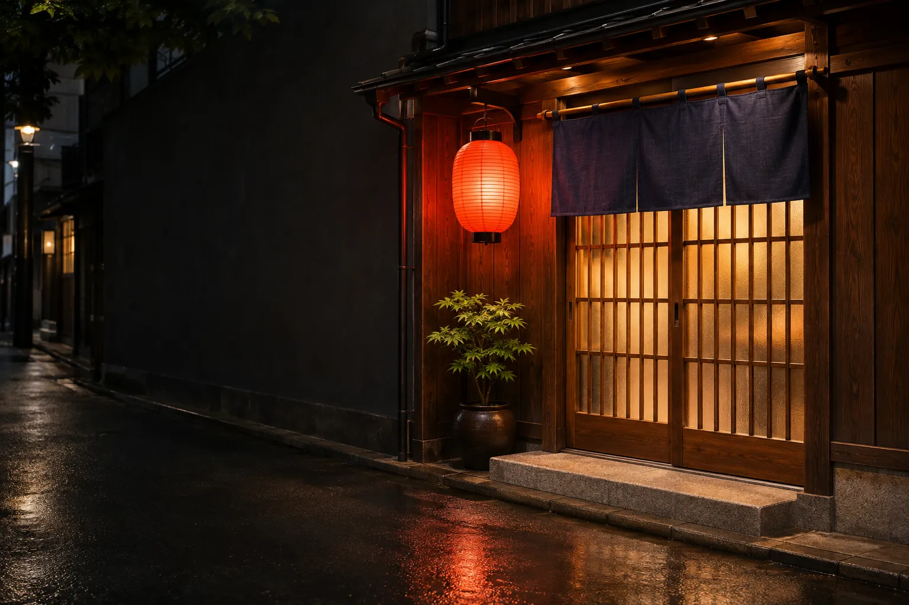
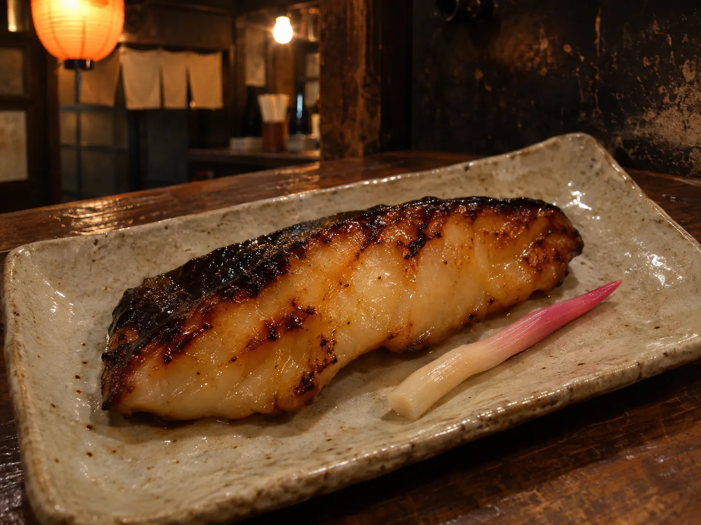
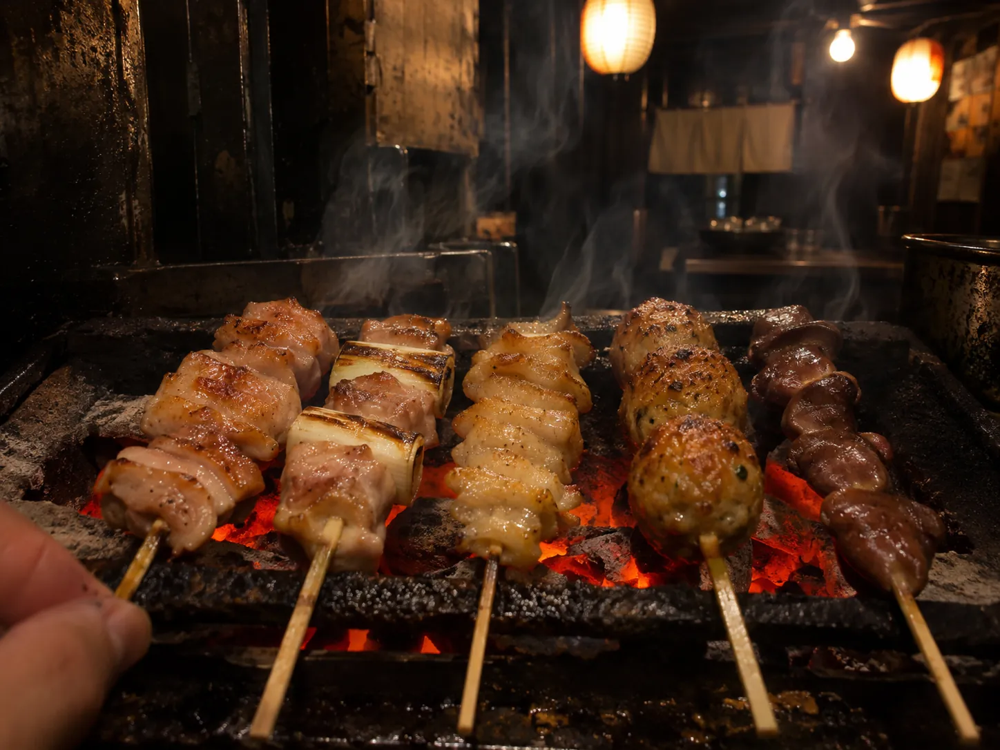
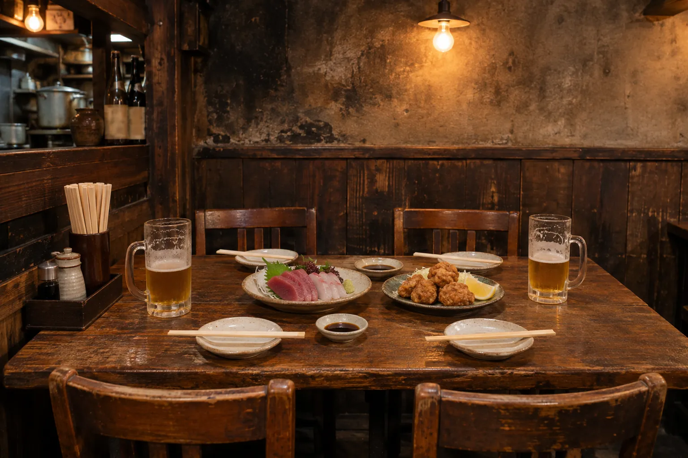

IZAKAYA DAIMATSU
新橋・1978年から
17:00–23:30・日曜祝日休み
名物
Signature
 本日の刺身 三点盛¥1,800
本日の刺身 三点盛¥1,800その日の魚から三種。2人前です。

銀だら西京焼¥1,400白味噌に二晩漬けて、炭火で焼きます。

焼き鳥 5本盛り¥1,200もも・ねぎま・皮・つくね・ハツ。塩かたれで。
宴会コース
Party courses
どちらも2時間の飲み放題つき。4名さまから、前日までにご予約ください。
- 竹コース¥4,000おひとり
料理6品＋飲み放題2時間
枝豆／刺身三点盛／鶏の唐揚げ／焼き鳥／だし巻き玉子／焼きおにぎり
- 松コース¥5,000おひとり
料理8品＋飲み放題2時間
枝豆／刺身五点盛／銀だら西京焼／焼き鳥／海老の天ぷら／もつ煮込み／だし巻き玉子／鯛茶漬け
- 飲み放題だけ¥2,200おひとり
2時間。料理は品書きからお好きに。2名さまから。
16〜24名さまで貸切にできます。お電話でご相談ください。
店内
Inside

カウンター8席。おひとりでもどうぞ。

テーブル4卓（4名ずつ）。つなげて16名まで。

日本酒は15種類。一合（180ml）からお出しします。
初めての方へ
FAQ
- 予約は必要ですか
- 3名さままでは予約なしでどうぞ。4名さま以上と宴会コースは、お電話でご予約ください。
- 支払い方法は
- 現金・クレジットカード・PayPay が使えます。お会計はお席でまとめて承ります。
- 最初に出てくる小鉢は何ですか
- 「お通し」といって、¥450 です。日本の居酒屋で、席料のかわりにお出しするものです。
- たばこは吸えますか
- 店内は全席禁煙です。
- アレルギーや食べられないものがあります
- 注文のときにお伝えください。だしには鰹（魚）を使っています。豚肉を使う料理には「豚」と書いています。ベジタリアン向けの料理は多くありません。
- どれくらい頼めばいいですか
- 一皿は1〜2人で分ける量です。2〜3品ずつ頼んで、足りなければ追加するのがおすすめです。
時間と場所
Hours & access
- 営業
- 17:00–23:30（料理の注文は23:00まで、飲み物は23:15まで）
- 休み
- 日曜・祝日
- 席
- カウンター8席・テーブル4卓（全24席）
- 電話
- +81 3-XXXX-XXXX（架空の番号です）
- 住所
- 東京都港区新橋3丁目（架空の住所です）
駅から
- JR 新橋駅（烏森口）徒歩4分
- 都営浅草線 新橋駅（A1出口）徒歩5分
- 東京メトロ銀座線 新橋駅（8番出口）徒歩6分
- 羽田空港から京急線で新橋まで乗り換えなし、約25分